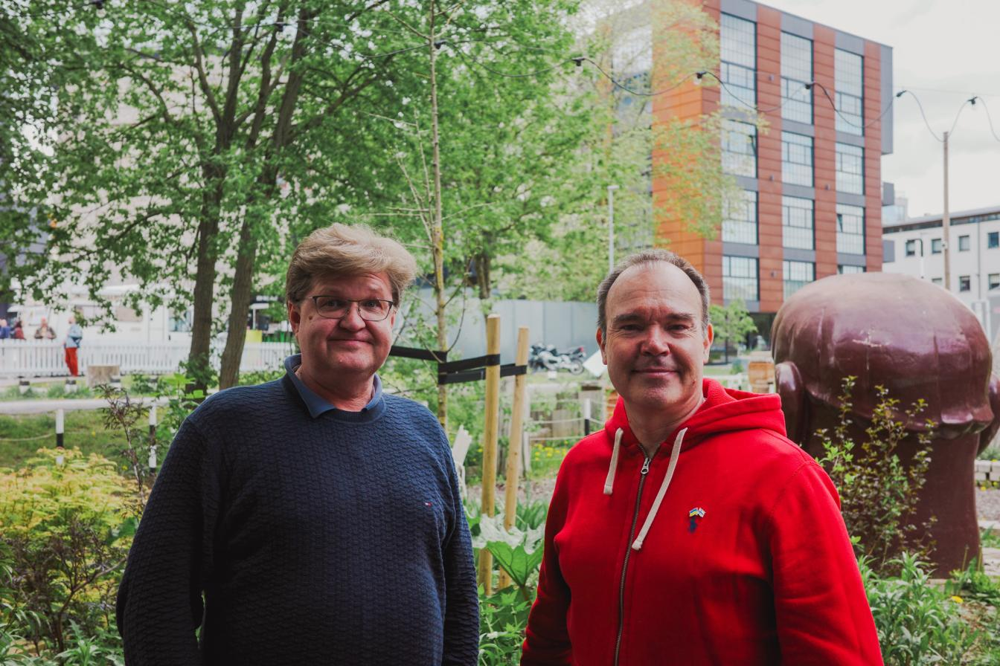

When we founded Flowcore, we were solving a specific technical problem: how to build event-driven data infrastructure that could handle enterprise-scale requirements. We succeeded. Our platform powers real-world systems managing critical data flows for customers across sectors.
But over the past year, something profound shifted in how we think about the problem we're solving.
The AI Agent Problem
We started noticing a pattern as organizations began deploying AI agents: AI agents are terrible at knowledge management.
Teams building AI agents face a fundamental choice: build their own RAG infrastructure—requiring decisions on vector databases, embedding models, chunking strategies, re-rankers, and multi-agent orchestration—or settle for agents with no long-term memory at all.
This isn't a technical limitation of the AI models themselves. It's a knowledge infrastructure problem. Every agent conversation starts from zero because there's no shared memory layer.
We realized that the most valuable thing we could build wasn't just a data infrastructure platform—it was a dedicated knowledge base for AI agents. We built Usable on top of our Flowcore infrastructure to solve exactly this: providing AI agents with structured, long-term memory that persists across conversations and sessions.
And that's when it became clear: the name "Flowcore" didn't capture what we were really doing anymore.
Why "Usable"?
The name reflects a fundamental shift in how we think about enterprise knowledge in the AI era.
Usable means:
- Knowledge that's structured for AI: Not document archives, but interconnected fragments with types, tags, and relationships that create a knowledge graph agents can navigate
- Upload once, connect any agent: Teams upload their documents, code, notes, and internal knowledge—through drag-and-drop, fully editable interfaces, or by connecting to any legacy system via API to keep knowledge up-to-date automatically
- Agentic search with re-ranking: AI agents connect via the Model Context Protocol (MCP) or REST API to perform intelligent search that understands context and relevance
- Shared memory infrastructure: Multiple agents across an organization access the same durable, cross-session knowledge rather than each starting from zero
We're not just storing data anymore. We're providing the infrastructure layer that makes AI agent knowledge management possible—without requiring teams to build custom RAG systems or invest months in ML engineering.
What Changes (and What Doesn't)
For our customers: Nothing changes operationally. All contracts, support relationships, and service levels remain exactly the same. We're still the same team, with the same commitment to your success. The only updates are our legal entity name (Usable Sp/f) and our primary domain (usable.dev). If you're using Flowcore, we'll continue supporting it as a standalone product—it's still the powerful event infrastructure you depend on.
For our mission: Everything changes. We're now explicitly focused on being your own knowledge base. Every product decision, every feature, every partnership will be evaluated through this lens: Does this make knowledge more accessible and usable for AI agents?
The Strategic Partnership with Random Ventures
Today, we're also announcing that Peter Vesterbacka and Kustaa Valtonen from Random Ventures have joined us as strategic advisors and investors.

Peter is best known for his work with Rovio the Angry Birds company where he was the Mighty Eagle (CMO). He is also well known as the founder of Slush, the world's leading startup event. He brings extensive experience in building global tech ecosystems, scaling startups, and connecting founders with international markets. But more importantly, he understands the problem we're solving. He's seen how AI is reshaping how companies operate, and he believes in our approach to organizational memory.
Kustaa is a seasoned early-stage investor and technology advisor with deep experience in enterprise software and B2B SaaS. Through Random Ventures, he works closely with founders to scale products and organizations internationally. Random Ventures is a Finest Bay Area investment company that invests globally in early-stage startups, supporting ambitious founders with both capital and hands-on strategic guidance across markets.
Their involvement isn't just capital—it's strategic guidance, networks, and validation that we're solving a real problem at scale.
Where We Go from Here
We're at an inflection point. Everyone is building AI agents, and most are struggling with knowledge management. Usable provides the infrastructure layer that makes this possible—without requiring teams to build custom RAG systems, choose between dozens of technical options, or invest months in ML engineering.
We're expanding beyond our current customer base. We're building partnerships with AI agent frameworks, observability platforms, and enterprise software vendors. And we're committed to making Usable the standard for AI agent knowledge management.
The Faroe Islands have produced some remarkable technology companies. We intend to add Usable to that list—not just as a local success story, but as a global platform that reshapes how enterprises think about organizational knowledge.
Thank you for being part of this journey.
— Ólavur Ellefsen, CEO, Usable
FAQ: Questions We've Been Asked
Q: Does this affect my existing Flowcore contract?
A: No. All contracts, billing, and support relationships remain unchanged. We've simply updated our legal entity name and primary domain.
Q: What about the Flowcore product?
A: Flowcore continues as a standalone SaaS product. It's the event-driven data infrastructure that powers Usable, and we're committed to supporting it for customers who use it independently.
Q: Why the name change?
A: The name change reflects our strategic focus on AI-powered knowledge management. Usable better captures what we're building: organizational memory that's truly usable for AI systems and human teams.
Q: How do Peter Vesterbacka and Kustaa Valtonen contribute?
A: They serve as strategic advisors and investors. Peter is best known for his work with Rovio (the Angry Birds company) where he was the Mighty Eagle (CMO), and as the founder of Slush, the world's leading startup event. He brings extensive experience in building global tech ecosystems, scaling startups, and connecting founders with international markets. Kustaa is a seasoned early-stage investor and technology advisor with deep experience in enterprise software and B2B SaaS, working closely with founders to scale products and organizations internationally through Random Ventures. Both are actively involved in guiding our strategy and expansion.
Q: Is the legal entity changing?
A: Yes, our legal entity has formally changed its name from Flowcore Sp/f to Usable Sp/f. This is a legal name change, not a new company. All existing relationships and obligations transfer to the new entity name.
Q: What's your new domain?
A: Our primary domain is now usable.dev. Legacy flowcore.com addresses continue to work, and we'll maintain redirects for a transition period.
Q: How can I learn more?
A: Visit www.usable.dev, read our press release, or reach out to olavur@usable.dev with questions.